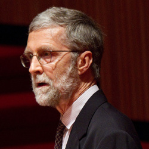

The 2014 Edgington Lectures: Rae Langton
The 2nd Edgington Lectures were given by
Rae Langton
(Cambridge), on January 24th–25th, 2014. Professor Langton
lectured on
Race, Gender, and Hate Speech.
The papers in the graduate workshop were:
- Erin Beeghly (Berkeley), What's (Morally) Wrong with Stereotyping
- Konstancja Duff (Sussex), They Will All Drown in the Depths of Things as they Are
- Rachel Fraser (Oxford), The Ethics of Metaphor
- Cassie Herbert (Georgetown), Slurs and Sluts: The Precarious Performative Structure of Reclamation Projects
- James Kirkpatrick (Oxford), Hate Speech, Generics and Linguistic Revision
- Charlotte Knowles (Birkbeck), Another Form of Silencing
- Kameron St. Clare (Sheffield), Devolution Revoltion: Subordinating Hate Speech and the Problems of Authority
The 2012 Edgington Lectures: John McDowell

The inaugural Edgington Lectures were given
by John McDowell
(Pittsburgh) on March 2nd–3rd 2012. Professor McDowell's theme was
The Epistemology of Perception.
The papers in the graduate workshop were:
- Paul Broadbent (Birmingham), Must All Facts Be Available to All?
- Ezra Cohen (Sussex), Mind and World: an endless oscillation
- Peter Dennis (Reading/Columbia), (Really) Overcoming Traditional Epistemology
- Jenny Judge (Cambridge), 'I hear music': the epistemology of auditory perception and its links to musical listening
- Yair Levy (Oxford), On the Idea of Permissive Epistemic Rules
- Alan McKay (Queen's University Belfast), Constitution and the Disjunctive Theory
- Colin McLear (Cornell), Kant and McDowell on Perceptual Givenness
- Dominic Shaw (York), Openness to the World and Relating to Oneself: McDowell and Merleau-Ponty